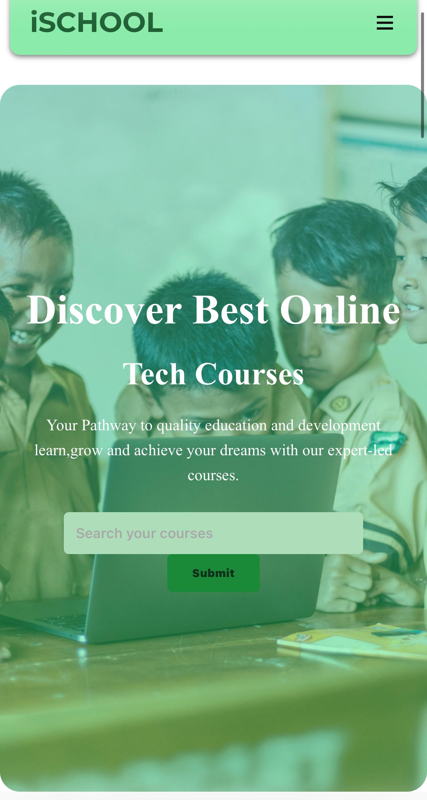
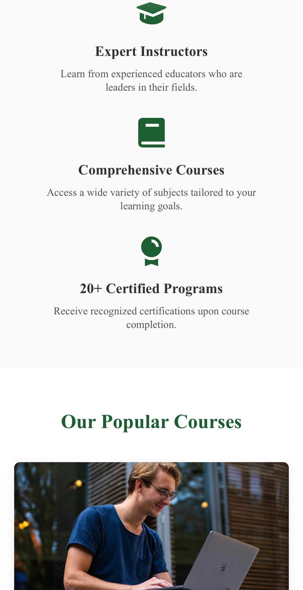
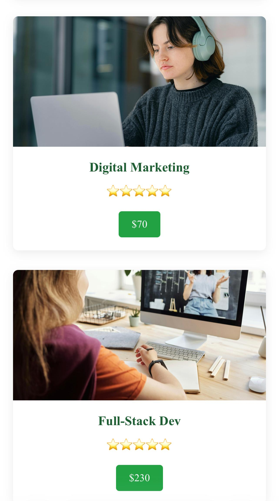
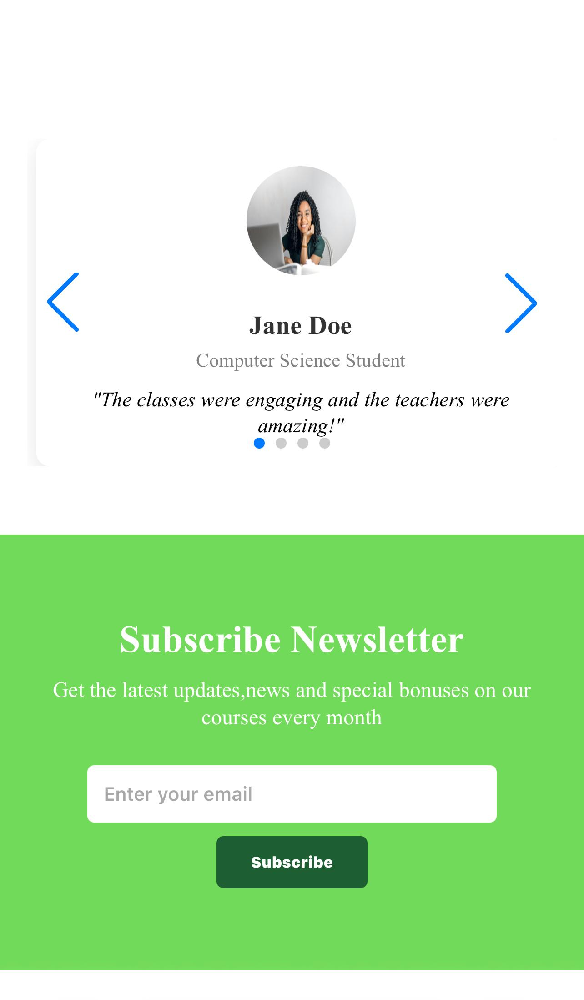

ISCHOOL is an online learning platform designed to give students a simple, engaging and distraction-free learning experience through thoughtful interface design and user-centered decisions.
Many online learning platforms present too much information at once, making it difficult for students to focus on lessons, assignments and course progress.
The challenge was to simplify navigation while making important learning resources easy to access.
I designed a clean learning dashboard with clear navigation, organized course layouts and intuitive interactions. The interface helps students quickly find courses, monitor progress and stay focused on learning.
High-fidelity screens from the ISCHOOL design.




Quick access to enrolled courses and learning progress.
Browse available courses with a clean organized layout.
Students easily monitor completed lessons and remaining tasks.
Optimized for desktop, tablet and mobile learning.
This project strengthened my understanding of educational product design, dashboard layouts, user flows and creating interfaces that help users accomplish tasks efficiently.
Experience the application in action or browse the source code to see how it was built.